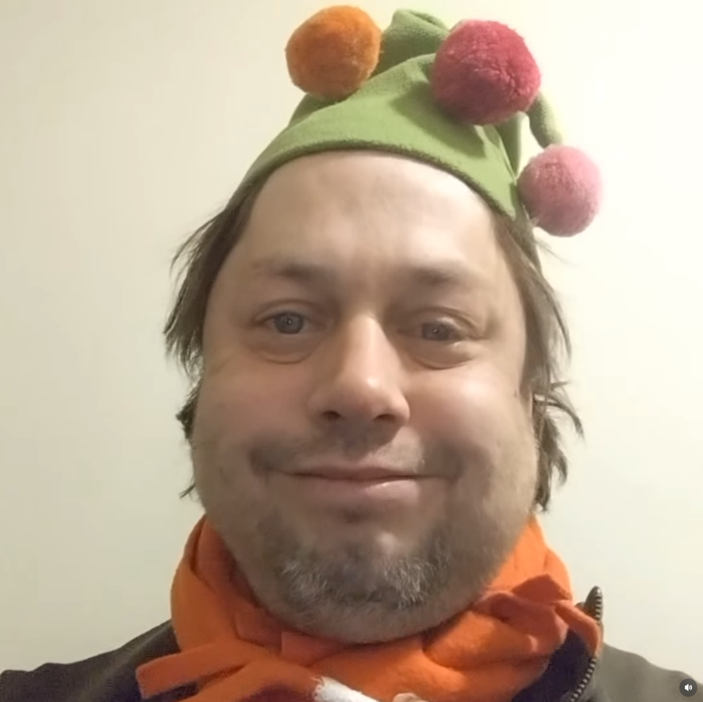

=======
input,
textarea {
user-select: text !important;
-webkit-user-select: text !important;
}
/* Scrollbar */
.custom-scrollbar::-webkit-scrollbar {
width: 8px;
height: 8px;
}
.custom-scrollbar::-webkit-scrollbar-track {
background-color: var(--bg-tertiary);
}
.custom-scrollbar::-webkit-scrollbar-thumb {
background-color: #1a1b1e;
border-radius: 4px;
}
/* Animace */
@keyframes fade-in {
from {
opacity: 0;
transform: translateY(10px);
}
to {
opacity: 1;
transform: translateY(0);
}
}
.animate-fade-in {
animation: fade-in 0.3s ease-out forwards;
}
@keyframes pulse-glow {
0%,
100% {
box-shadow: 0 0 5px rgba(235, 69, 158, 0.3);
}
50% {
box-shadow: 0 0 15px rgba(235, 69, 158, 0.6);
}
}
.pulse-glow {
animation: pulse-glow 2s infinite;
}
/* Jemná animace pro přepínání měsíců */
@keyframes calendarFade {
from {
opacity: 0;
transform: scale(0.98); /* Začne trochu zmenšený */
}
to {
opacity: 1;
transform: scale(1);
}
}
.calendar-fade {
animation: calendarFade 0.2s ease-out forwards;
}
/* --- STYL MAPY A PINOV --- */
#leaflet-map {
width: 100%;
height: 100%;
background: #e3e8eb;
z-index: 1;
}
/* Vzhled Pinu (Kapka) */
.custom-div-icon {
background: transparent;
border: none;
}
.marker-pin {
width: 30px;
height: 30px;
border-radius: 50% 50% 50% 0;
background: #5865f2;
position: absolute;
transform: rotate(-45deg);
left: 50%;
top: 50%;
margin: -15px 0 0 -15px;
display: flex;
align-items: center;
justify-content: center;
box-shadow: 0 3px 6px rgba(0, 0, 0, 0.4);
border: 2px solid white;
}
/* Ikona uvnitř pinu (otočení zpět) */
.marker-pin i {
transform: rotate(45deg);
color: white;
font-size: 14px;
}
.marker-pin:hover {
transform: rotate(-45deg) scale(1.2);
z-index: 1000;
transition: transform 0.2s;
}
/* Bubliny na mapě */
.leaflet-popup-content-wrapper,
.leaflet-popup-tip {
background: #2f3136;
color: #dcddde;
border: 1px solid #202225;
box-shadow: 0 3px 14px rgba(0, 0, 0, 0.4);
}
.leaflet-container a {
color: #5865f2;
}
.leaflet-popup-content b {
color: #fff;
font-size: 14px;
}
.leaflet-container a.leaflet-popup-close-button {
color: #b9bbbe;
}
/* --- KNIHOVNA & HODNOCENÍ --- */
.star-btn {
color: #4f545c; /* Šedá pro neaktivní */
transition: color 0.2s, transform 0.1s;
cursor: pointer;
font-size: 1.1rem;
}
.star-btn.active {
color: #faa61a; /* Zlatá pro aktivní */
}
.star-btn:hover {
transform: scale(1.2);
}
/* User Popout Animation */
/* .user-popout {
position: absolute;
bottom: 60px;
left: 10px;
width: 300px;
background: #18191c;
border-radius: 8px;
box-shadow: 0 8px 16px rgba(0,0,0,0.24);
z-index: 100;
overflow: hidden;
transform: scale(0.9);
opacity: 0;
pointer-events: none;
transition: all 0.2s cubic-bezier(0.175, 0.885, 0.32, 1.275);
border: 1px solid #2f3136;
}
.user-popout.active {
transform: scale(1);
opacity: 1;
pointer-events: auto;
} */
/* .popout-banner { height: 60px; background: #5865F2; }
.popout-avatar {
width: 80px; height: 80px;
border-radius: 50%;
border: 6px solid #18191c;
position: absolute; top: 20px; left: 20px;
}
.popout-badges { position: absolute; top: 85px; right: 16px; background: #18191c; border-radius: 4px; padding: 2px; } */
/* Ostatní styly (CMD, Modals...) */
.modal-backdrop {
background: rgba(0, 0, 0, 0.85);
backdrop-filter: blur(3px);
}
.cmd-window {
font-family: "Consolas", monospace;
box-shadow: 0 10px 30px rgba(0, 0, 0, 0.5);
}
.cmd-header {
background: #fff;
color: #000;
padding: 2px 10px;
font-size: 12px;
display: flex;
justify-content: space-between;
align-items: center;
}
.cmd-body {
background: #0c0c0c;
color: #ccc;
padding: 5px;
height: 400px;
overflow-y: auto;
}
.cmd-cursor {
display: inline-block;
width: 8px;
height: 14px;
background: #ccc;
animation: blink 1s infinite;
}
@keyframes blink {
50% {
opacity: 0;
}
}
.typing-cursor::after {
content: "|";
animation: blink 1s infinite;
color: var(--pink);
margin-left: 2px;
}
/* Mobilní zobrazení */
@media (max-width: 768px) {
#leaflet-map {
min-height: 350px;
}
.flex-col-mobile {
flex-direction: column;
}
}
/* --- NOVÉ: 1. User Popout Animation --- */
.user-popout {
position: absolute;
bottom: 60px;
left: 10px;
width: 300px;
background: #18191c;
border-radius: 8px;
box-shadow: 0 8px 16px rgba(0, 0, 0, 0.24);
z-index: 200; /* Zvýšeno, aby to bylo nad vším */
overflow: hidden;
transform: scale(0.9);
opacity: 0;
pointer-events: none;
transition: all 0.2s cubic-bezier(0.175, 0.885, 0.32, 1.275);
border: 1px solid #2f3136;
}
.user-popout.active {
transform: scale(1);
opacity: 1;
pointer-events: auto;
}
.popout-banner {
height: 60px;
background: #5865f2;
}
.popout-avatar {
width: 80px;
height: 80px;
border-radius: 50%;
border: 6px solid #18191c;
position: absolute;
top: 20px;
left: 20px;
}
.popout-badges {
position: absolute;
top: 85px;
right: 16px;
background: #18191c;
border-radius: 4px;
padding: 2px;
}
/* --- NOVÉ: 2. Message Hover Effect --- */
.message-group {
padding: 8px 16px; /* Zvětšeno pro lepší vzhled */
margin-top: 2px;
position: relative;
}
.message-group:hover {
background-color: rgba(4, 4, 5, 0.07);
}
.message-actions {
position: absolute;
top: -10px;
right: 16px;
background: #36393f;
border: 1px solid #202225;
border-radius: 4px;
padding: 4px;
display: none;
box-shadow: 0 2px 4px rgba(0, 0, 0, 0.2);
z-index: 10;
}
.message-group:hover .message-actions {
display: flex;
align-items: center;
gap: 8px;
}
/* --- NOVÉ: 3. Custom Tooltip --- */
[data-tooltip] {
position: relative;
}
[data-tooltip]:hover::after {
content: attr(data-tooltip);
position: absolute;
bottom: 100%;
left: 50%;
transform: translateX(-50%);
background: #18191c;
color: #dcddde;
padding: 6px 10px;
border-radius: 4px;
font-size: 12px;
font-weight: bold;
white-space: nowrap;
pointer-events: none;
box-shadow: 0 4px 8px rgba(0, 0, 0, 0.3);
margin-bottom: 8px;
z-index: 1000;
}
[data-tooltip]:hover::before {
content: "";
position: absolute;
bottom: 100%;
left: 50%;
transform: translateX(-50%);
border: 6px solid transparent;
border-top-color: #18191c;
margin-bottom: -4px;
z-index: 1000;
}
/* --- VYLEPŠENÉ HVĚZDIČKY (Interactive Stars) --- */
/* Kontejner otočí pořadí prvků, aby fungoval CSS selektor pro "předchozí" sourozence */
.star-rating-group {
display: flex;
flex-direction: row-reverse;
justify-content: flex-end;
gap: 2px;
}
.star-btn {
color: #4f545c; /* Neaktivní šedá */
font-size: 1.2rem;
transition: color 0.1s, transform 0.1s;
padding: 0 2px;
}
/* 1. Logika pro ULOŽENÉ hodnocení (zlatá) */
/* Všechny hvězdy, které mají class active, budou zlaté */
/* Kvůli row-reverse musíme barvit trochu chytřeji v JS, ale tady stačí základ */
.star-btn.active {
color: #faa61a;
}
/* 2. Logika pro HOVER (interaktivní) */
/* Jakmile najedeme na kontejner, zrušíme zlatou u všech (aby se nepřetloukaly s hoverem) */
.star-rating-group:hover .star-btn {
color: #4f545c;
}
/* A teď to kouzlo: Obarvi tu, na které je myš... A všechny "následující" v DOMu (vizuálně předchozí) */
.star-btn:hover,
.star-btn:hover ~ .star-btn {
color: #faa61a !important;
transform: scale(1.3);
}
/* --- FIX PRO TOOLTIPY (Aby nebyly useknuté) --- */
/* Při najetí na kartu ji vytáhneme "nad" ostatní, aby tooltip nepřekrýval sousední film */
/* --- LIBRARY GRID DESIGN (Netflix Style) --- */
.library-card {
display: flex;
flex-direction: column; /* Svislé uspořádání: Ikona nahoře, text dole */
background: #2f3136;
border-radius: 8px;
overflow: visible; /* Důležité pro tooltipy! */
transition: transform 0.2s, box-shadow 0.2s, background-color 0.2s;
position: relative;
height: 100%;
border: 1px solid #202225;
}
/* Hover efekt celé karty */
.library-card:hover {
transform: translateY(-5px);
box-shadow: 0 8px 20px rgba(0, 0, 0, 0.4);
background-color: #36393f;
z-index: 50; /* Vytáhne kartu nad ostatní, aby tooltipy byly vidět */
border-color: #5865f2;
}
/* Sekce s ikonou (Plakát) */
.poster-area {
height: 120px; /* Fixní výška pro ikonu */
background: #202225;
display: flex;
align-items: center;
justify-content: center;
font-size: 4rem; /* Obří ikona */
border-bottom: 1px solid #202225;
border-radius: 8px 8px 0 0;
transition: font-size 0.2s;
}
.library-card:hover .poster-area {
font-size: 4.5rem; /* Ikona se při najetí mírně zvětší */
}
/* Sekce s obsahem */
.content-area {
padding: 10px;
display: flex;
flex-direction: column;
gap: 6px;
flex-grow: 1;
}
/* Tlačítka pod filmem */
.card-actions {
display: flex;
justify-content: space-between;
margin-top: auto; /* Přilepí tlačítka dolů */
padding-top: 8px;
border-top: 1px solid rgba(255, 255, 255, 0.05);
}
.card-actions button {
color: #b9bbbe;
transition: color 0.2s, transform 0.2s;
}
.card-actions button:hover {
color: #fff;
transform: scale(1.1);
}
/* Tooltip styly (jen ujištění, že mají vysoký z-index a nealamují myš) */
[data-tooltip]:hover::after,
[data-tooltip]:hover::before {
z-index: 9999;
pointer-events: none;
}
/* --- MOBILE DATE PLANNER STYLES --- */
/* Skryje scrollbar v seznamu kategorií, ale zachová posouvání */
.hide-scrollbar::-webkit-scrollbar {
display: none;
}
.hide-scrollbar {
-ms-overflow-style: none;
scrollbar-width: none;
}
/* --- NO SCROLLBAR UTILITY --- */
.no-scrollbar::-webkit-scrollbar {
display: none;
}
.no-scrollbar {
-ms-overflow-style: none; /* IE and Edge */
scrollbar-width: none; /* Firefox */
}
/* Detail panel jako "Bottom Sheet" na mobilu */
/* --- MOBILE DATE PLANNER STYLES --- */
/* --- MOBILE DATE PLANNER STYLES --- */
@media (max-width: 768px) {
.mobile-map-overlay {
position: absolute;
bottom: 0;
left: 0;
right: 0;
/* --- FINÁLNÍ NASTAVENÍ --- */
height: 85vh !important; /* Panel je vysoký 85% obrazovky */
display: flex;
flex-direction: column;
background: #2f3136;
border-radius: 20px 20px 0 0;
box-shadow: 0 -10px 30px rgba(0, 0, 0, 0.5); /* Výraznější stín */
z-index: 9999 !important;
/* Pro plynulost na iPhonech */
will-change: transform;
transform: translateY(100%);
transition: transform 0.3s cubic-bezier(0.1, 0.7, 0.1, 1);
}
#detail-content {
overscroll-behavior: contain;
}
/* Na mobilu chceme místo dole kvůli gestům */
@media (max-width: 768px) {
#detail-content {
/* Původně 80px, zmenšeno na minimum + rezerva pro iPhone čárku */
padding-bottom: calc(20px + env(safe-area-inset-bottom));
}
}
/* Na PC chceme jen malé odsazení */
@media (min-width: 769px) {
#detail-content {
padding-bottom: 10px; /* Malé odsazení na PC */
}
}
/* Seznam míst na mobilu */
.mobile-list-overlay {
position: absolute;
inset: 0;
background: #2f3136;
z-index: 900;
display: none;
}
.mobile-list-overlay.active {
display: flex;
}
}
/* Styl pro panel, který platí vždy (i na desktopu) */
.mobile-map-overlay {
background: #2f3136; /* Barva pozadí */
border-radius: 20px 20px 0 0; /* Kulaté rohy nahoře */
box-shadow: 0 -10px 30px rgba(0, 0, 0, 0.5); /* Stín */
display: flex;
flex-direction: column;
z-index: 999;
}
/* Na mobilu chceme fixní výšku, na desktopu max-výšku */
@media (max-width: 768px) {
.mobile-map-overlay {
height: 85vh !important;
}
}
@media (min-width: 769px) {
.mobile-map-overlay {
height: auto !important; /* DŮLEŽITÉ: Výška se přizpůsobí obsahu */
max-height: 60vh; /* Ale nepůjde přes 60% obrazovky */
bottom: 20px; /* Odlepíme ho od spodní hrany (vypadá to moderněji) */
left: 20px; /* Odlepíme zleva */
right: 20px; /* Odlepíme zprava (nebo můžeš dát width: 500px a margin: 0 auto) */
border-radius: 20px; /* Zakulatíme všechny rohy, nejen horní */
box-shadow: 0 5px 30px rgba(0, 0, 0, 0.8); /* Silnější stín pro oddělení od mapy */
}
/* Skryjeme "tahátko" (handle) na desktopu, tam nedává smysl */
#sheet-handle {
display: none !important;
}
/* Tlačítko zavřít posuneme, aby vypadalo lépe */
.mobile-map-overlay .fa-times {
top: 10px !important;
right: 10px !important;
}
}
/* --- MOBILE GESTURES CSS --- */
/* Zabrání scrollování stránky při tažení panelu */
.touch-none {
touch-action: none;
}
/* Větší plocha pro "chycení" panelu nahoře */
/* Větší plocha pro "chycení" panelu nahoře */
.sheet-handle-area {
width: 100%;
height: 40px; /* Zvětšil jsem to z 30px, ať je víc místa pro prst */
/* --- ZMĚNA ZDE: Už ne absolute! --- */
position: relative;
flex-shrink: 0; /* Aby se nezmenšoval, když je málo místa */
/* ---------------------------------- */
display: flex;
align-items: center;
justify-content: center;
cursor: grab;
z-index: 50;
background: transparent;
}
/* Vizuální čárka (Handle) */
.sheet-handle-bar {
width: 40px;
height: 5px;
background-color: #4f545c;
border-radius: 10px;
transition: background-color 0.2s;
}
.sheet-handle-area:active .sheet-handle-bar {
background-color: #eb459e; /* Zrůžoví při tažení */
}
/* Hladká animace jen když netaháme prstem */
.sheet-transition {
transition: transform 0.3s cubic-bezier(0.2, 0.8, 0.2, 1);
}
<<<<<<< HEAD
=======
>>>>>>> 891a948781eac03f4779867ac8e9030ae1a4b604

 >>>>>>> 891a948781eac03f4779867ac8e9030ae1a4b604
>>>>>>> 891a948781eac03f4779867ac8e9030ae1a4b604


======= class="w-12 h-12 bg-[var(--bg-primary)] rounded-full hover:rounded-2xl hover:bg-[var(--blurple)] transition-all cursor-pointer flex items-center justify-center text-[var(--text-normal)] hover:text-white mb-2" >
Kiscord 🦝🤍🦉
Klárka
#1337 • Online
Kiscord 🦝🤍🦉
Klárka
#1337 • Online
uvítání

🏆 🦉
Klárka
#1337 • Vrchní Fact-Checker
>>>>>>> 891a948781eac03f4779867ac8e9030ae1a4b604
🏆 🦉
Klárka
#1337 • Vrchní Fact-Checker
BIO
📍 Věří, že Podolí je skutečné místo.
🦉 Spirituální zvíře: Sova (protože ponocuje).
🔥 Přežila se mnou Hody i požár v Polešovicích.
Status: Vrchní
navigátor (občas).